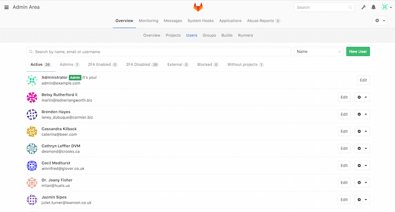
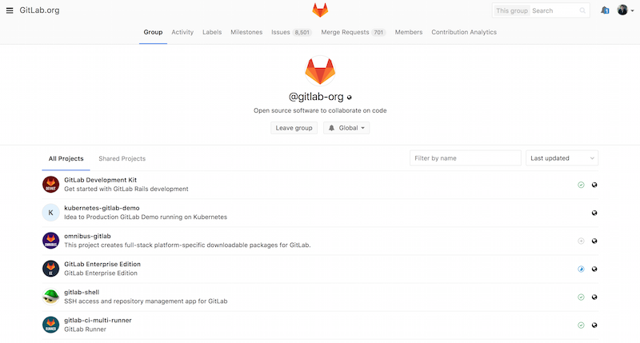

٤، ٨، GitLab
لعلك وجدت أن جتوب GitWeb قليل الإمكانات بعض الشيء. فإذا كنت تبحث عن خادوم جت حديث ومكتمل الخصائص، فيوجد عدد من الحلول المفتوحة المصدر يمكنك تثبيتها بدلا منه. ولأن جتلاب من أشهرها، فإننا سنتناول تثبيته واستخدامه مثالا. هذا الخيار أصعب من جتوب وسيحتاج منك رعاية أكثر، لكنه مكتمل الخصائص.
التثبيت
جتلاب هو تطبيق وب بقاعدة بيانات، لذا فتثبيته أعقد من بعض خواديم جت الأخرى. لكن لحسن الحظ هذه العملية موثقة بالكامل ومدعومة جيدا. جتلاب يشدد التوصية بتثبيته على خادومك عبر الحزمة الرسمية الحافلة، المسماة حزمة “Omnibus GitLab”.
خيارات التثبيت الأخرى هي:
-
GitLab Helm chart، لاستخدامه مع Kubernetes.
-
حزم Docker لـ GitLab، لاستخدامها مع Docker.
-
من مِلفات المصدر.
-
مقدِّمو الخدمات السحابية، مثل AWS و Google Cloud Platform و Azure و OpenShift و Digital Ocean.
للمزيد من المعلومات (بالإنجليزية) انظر GitLab Community Edition (CE) readme.
الإدارة
واجهة إدارة جتلاب هي واجهة وب.
ليس عليك إلا توجيه متصفحك إلى اسم المُضيف (“hostname”) أو عنوان IP الذي ثبتَّ عليه جتلاب، ثم لُج بحساب المدير root.
كلمة المرور المبدئية تختلف حسب خيار التثبيت، لكن الحزمة الرسمية الحافلة، بطبيعتها تولّد لك كلمة مرور وتخزنها في ملف /etc/gitlab/initial_root_password حتى أربعٍ وعشرين ساعة على الأقل.
انظر التوثيق لتفاصيل أزيد.
بعد الولوج، اضغط على رمز “Admin area” (منطقة الإدارة) في القائمة التي على اليمين بالأعلى.
المستخدمون
على كل من يريد استخدام خادوم جتلاب الخاص بك الحصول على حساب مستخدم.
حسابات المستخدمين أمر يسير؛ هي في الأساس معلومات شخصية مرتبطة ببيانات الولوج.
كل حساب مستخدم لديه مساحة أسماء (“namespace”)، وهي تجميع منطقي للمشروعات الخاصة به.
فمثلا إذا كان لدى المستخدم shams مشروع اسمه project، فإن رابط ذلك المشروع سيكون http://server/shams/project.

يمكنك إزالة حساب مستخدم بطريقتين: «حظر» (“block”) حساب مستخدم يمنعه من الولوج إلى خادومك، ولكن كل بياناته التي في مساحة أسمائه ستبقى، والإيداعات الموقَّعة ببريده ستظل تشير إلى صفحته الشخصية على خادومك.
أما «محو» (“destroy”) مستخدمٍ فيزيله تماما من قاعدة البيانات ومن نظام الملفات؛ ستُزال كل المشروعات والبيانات التي في مساحة أسمائه، وكذلك كل المجموعات التي يملكها. طبعا هذا الفعل مستديم الأثر وأشد إتلافًا، ونادرا ما ستحتاجه.
المجموعات
المجموعة في جتلاب هي تجميعة من المشروعات، مع معلومات عن كيفية وصول المستخدمين إلى هذه المشروعات.
كل مجموعة لديها «مساحة أسماء مشروعات»، تماما مثلما للمستخدمين، لذا فإن كان في المجموعة training مشروع اسمه materials، فسيكون رابطه http://server/training/materials.

ترتبط كل مجموعة بعدد من المستخدمين، ولكل منهم مستوى من الصلاحيات لمشروعات المجموعة وكذلك المجموعة نفسها. وتتراوح هذه المستويات من “Guest” («زائر»: للمسائل “issues” والمحادثات “chat” فقط)، إلى “Owner” («مالك»: للتحكم الكامل في المجموعة وأعضائها ومشروعاتها). وهذه المستويات كثيرة يصعب سردها هنا، لكنّ شاشة الإدارة في جتلاب فيها رابطا مفيدا.
المشروعات
المشروع في جتلاب هو تقريبا مستودع جت واحد. ينتمي كل مشروع إلى مساحة أسماء واحدة، إما لمستخدم وإما لمجموعة. وإذا كان المشروع ينتمي إلى مستخدم، فلدى مالك المشروع تحكم مباشر في من لديه حق الوصول إلى المشروع. وإذا كان ينتمي إلى مجموعة، فصلاحيات أعضاء المجموعة هي التي تحدد.
كل مشروع له مستوى ظهور، ليحدد من يستطيع رؤية صفحات هذا المشروع ومستودعه.
فإذا كان المشروع «خصوصيًّا» (“Private”)، فلا يظهر إلا لمن يحددهم مالك المشروع بالاسم.
وإذا كان «داخليًّا» (“Internal”)، فإنه لا يظهر إلا للمستخدمين الوالِجين إلى الخادوم. وإذا كان «عموميًّا» (“Public”) فإنه يظهر للجميع.
لاحظ أن هذا يتحكم في الوصول عبر git fetch وكذلك عند الوصول عبر واجهة الوب لهذا المشروع.
الخطاطيف
يدعم جتلاب الخطاطيف، على مستوى المشروع وعلى مستوى النظام كله. سيرسل خادوم جتلاب طلب HTTP بطريقة POST مع وصف بصيغة JSON، كلما حدثَ حدثٌ مناسب. وهذه طريقة عظيمة لربط مستودعات جت وخادوم جتلاب بالأدوات الآلية الأخرى التي تستخدمها في التطوير، مثل خواديم الدمج المستمر (CI)، وغرف المحادثة، وأدوات النشر (deployment).
الاستخدام الأساسي
أول ما قد تود عمله على جتلاب هو إنشاء مشروع، وذلك بالضغط على رمز “+” على شريط الأدوات. ستُسأل عن اسم المشروع، ومساحة الأسماء التي ينتمي إليها، ومستوى ظهوره. معظم ما تحدده هنا ليس مستديمًا، فتستطيع تغييره فيما بعد من واجهة الإعدادات. اضغط على “Create Project” («إنشاء المشروع») لإتمام العملية.
وما إن يكون المشروع حيًّا، قد تود ربطه بمستودع محلي.
يمكن التواصل مع أي مشروع عبر HTTPS أو SSH. ويمكنك استعمال أي منهما لإضافة مستودع جت بعيد في مستودعك المحلي.
ستجد الروابط في أعلى الصفحة الرئيسة للمشروع.
فمثلا تنفيذ هذا الأمر في مستودع محلي سيضيف إليه مستودعًا بعيدًا اسمه gitlab ويشير إلى المستودع المستضاف:
$ git remote add gitlab https://server/namespace/project.gitأما إذا لم يكن لديك نسخة محلية من المستودع، فيمكنك استنساخه بسهولة هكذا:
$ git clone https://server/namespace/project.gitوتتيح واجهة الوب طرائق مختلفة مفيدة للنظر إلى المستودع نفسه. فتُظهر الصفحة الرئيسة لكل مشروع آخر الأنشطة، والروابط التي في أعلى الصفحة تُريك ملفات المشروع وتاريخ إيداعاته.
التعاون
أسهل طريقة للتعاون على مشروع على جتلاب هي إعطاء كل مستخدم إذن الدفع مباشرةً إلى المستودع. يمكنك ضم المستخدمين إلى المشروع بالذهاب إلى قسم الأعضاء (“Members”) في إعدادات هذا المشروع، وربط المستخدمين الجدد بمستويات الوصول المناسبة. (مررنا على مستويات الوصول في فصل المجموعات). إذا كان للمستخدم مستوى الوصول «مطور» (“Developer”) فيستطيع دفع الإيداعات والفروع مباشرةً إلى المستودع.
لكن طريقة أخرى للتعاون بغير ضم المطورين إلى المستودع هي طلبات الدمج (“merge request”)، التي تتيح المساهمة بطريقة محكومة لكل مستخدم يستطيع رؤية المشروع. فالمستخدمون ذوو الوصول المباشر يمكنهم إنشاء فرع ودفع إيداعاتهم إليه ثم إنشاء طلب لدمج فرعهم في الفرع الرئيس أو أي فرع آخر. أما المستخدمون الذين ليس لديهم إذن الدفع للمستودع، فيمكنهم «اشتقاق» (“fork”) المستودع لإنشاء نسختهم الخاصة منه، ودفع إيداعاتهم إلى نسختهم الخاصة بهم، ثم إنشاء طلب دمج من اشتقاقهم إلى المشروع الأصل. يسمح هذا الأسلوب للمالك بالتحكم الكامل في كل ما يدخل المستودع ومتى يدخل، وفي الوقت نفسه يسمح بمساهمات المستخدمين غير الموثوق فيهم.
طلبات الدمج، والمسائل (“issues”)، هما أهم أدوات النقاشات الطويلة في جتلاب. فكل طلب دمج يسمح بنقاش على كل سطر من سطور التعديل المقترح (ويدعم نوعًا خفيفًا من مراجعة التعديلات (code review))، إضافةً إلى نقاش عام. يمكن تكليف مستخدم بإتمام طلب دمج أو مسألة، أو جعل ذلك ضمن هدف من الأهداف (“milestone”).
ركّز هذا الفصل في معظمه على خصائص جتلاب المرتبطة بـجت. ولكنه مشروع ناضج ومكتمل الخصائص، وفيه الكثير غير ذلك ليساعد فريقك في التعاون، مثل موسوعات المشروعات وأدوات رعاية الأنظمة. من محاسن جتلاب أنك ما إن تُتم إعداد الخادوم وتشغيله، فيندر أن تحتاج إلى تعديل ملف تهيئة أو الوصول إلى الخادوم عبر SSH؛ فواجهة الوب تتيح معظم أفعال الإدارة والاستخدام العام.